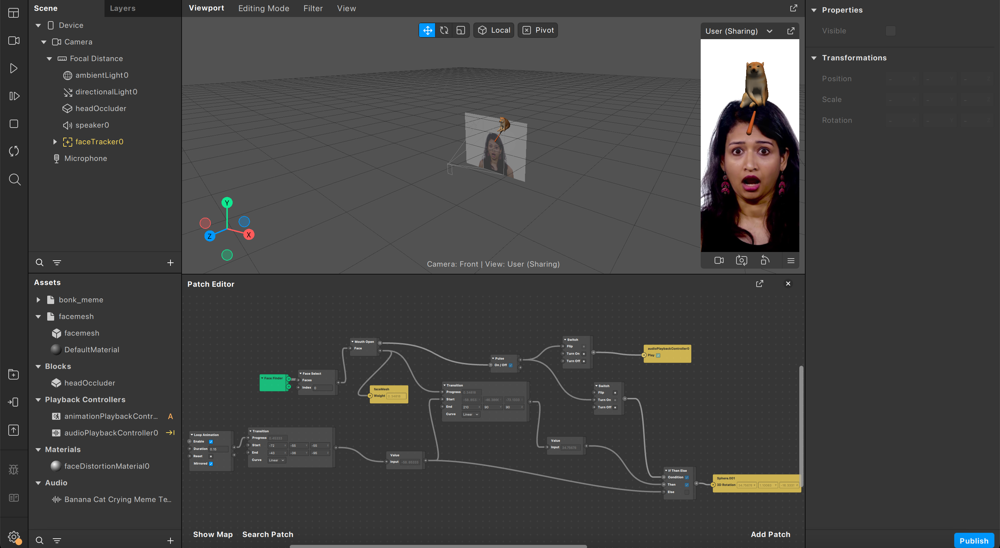

Portfolio
| Number | Name | Description | Date | Image |
|---|---|---|---|---|
| 1 | AR Filter |
Bonking Shiba Inu Meme This fun AR filter features a rotating 3D Shiba Inu holding a baseball bat. When users open their mouths, the Shiba Inu bonks them, causing their face to shrink humorously. The filter also includes a secondary animation triggered by a smile, making the experience even more entertaining. Perfect for sharing laughs and creating memorable moments with friends! |
July 2024 |  |
| 2 | Digital Drawing |
Drawing Favorite Characters Using a pen tablet, I create detailed digital drawings of my favorite actors and characters. |
March 2022 |

|
| 3 | Sketches |
Practicing Drawing I create pencil sketches on paper to practice and improve my drawing skills. These sketches range from quick studies to detailed drawings, capturing a variety of subjects and styles. |
March 2022 | |
| 4 | Vector |
Vector Artwork Created using Adobe Illustrator, this vector illustration features a character from my high school days. I also made my student council social media post for different events with the same software. |
August 2020 | |
| 5 | Typography |
Typography Design Crafted in Adobe Illustrator, this typography design features custom lettering and unique fonts. |
February 2021 |